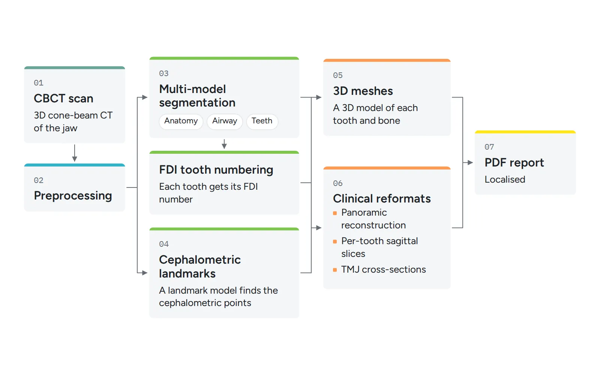
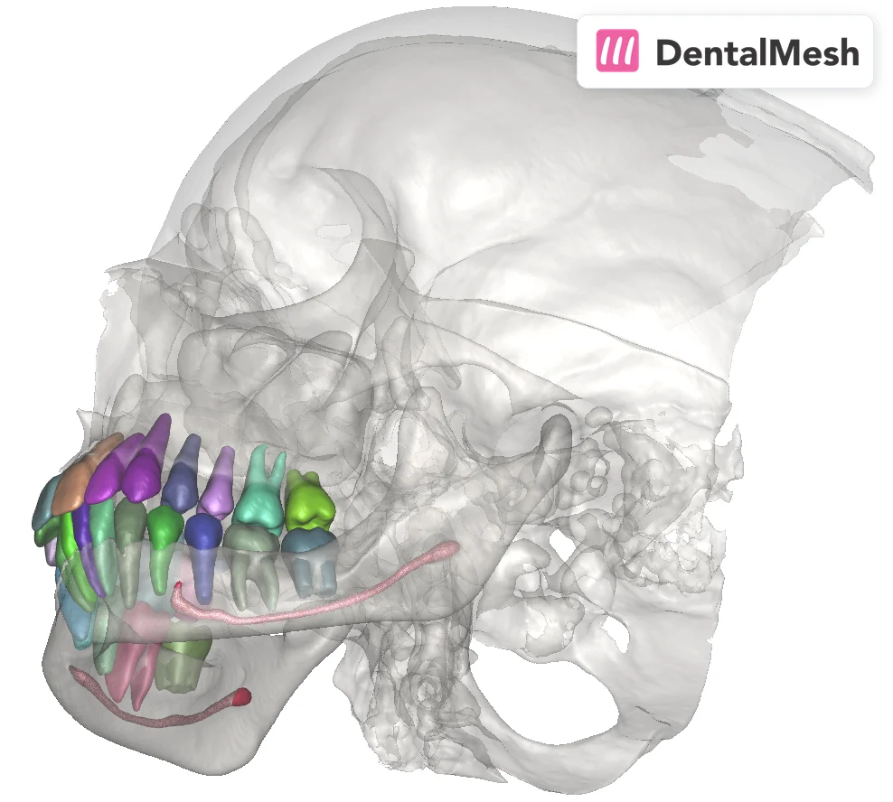
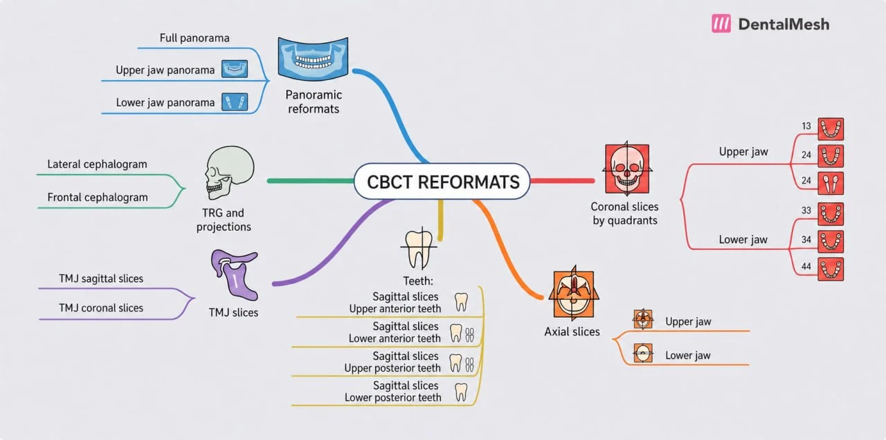
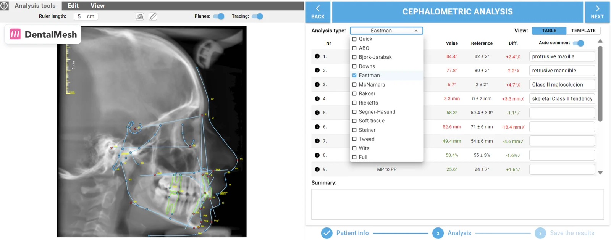
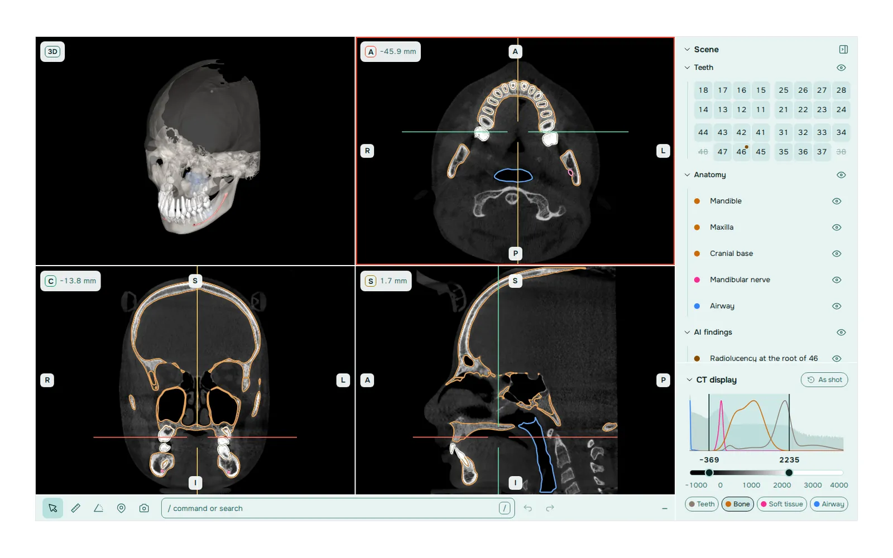

3D CBCT AI and DentalMesh Studio
DentalMesh AI turns a dental CBCT scan into 3D models, clinical reformats and a PDF report with no manual work. I designed the 3D inference pipeline behind it, took it to production on several clouds and worked on DentalMesh Studio, a 3D viewer where every action is also a typed command.
The problem
A cone-beam CT (CBCT) scan of the jaw is a 3D volume. Orthodontists, dental labs and aligner makers need more than the raw volume: a 3D model of each tooth and bone, a panoramic view, standard slices through every tooth and the jaw joints, and cephalometric measurements. Done by hand, this means segmenting structures slice by slice and orienting each view manually. It is slow, and the result depends on who does it.
DentalMesh sells this work as a service, priced per CBCT scan, to labs, clinics and dental software companies. So the pipeline has to run on any scan a customer uploads, return the same outputs every time and stay cheap enough to run per scan.
Approach

One pipeline from scan to report. A scan goes through preprocessing, then several segmentation models: anatomy, airway and teeth. Each tooth gets its FDI number. A landmark model finds cephalometric points. From the segmentations and landmarks, the pipeline builds the clinical reformats: TMJ cross-sections, a central sagittal slice through each tooth, and a panoramic reconstruction. It also computes 3D meshes and writes a localised PDF report.
A modular refactor. The first version was one monolithic script. I split it into stages that share one inference engine and one set of core utilities. Each stage can be run, tested and profiled on its own. I added per-stage profiling and a benchmark that tracks throughput and resource use across volume sizes, so a change to one model shows its cost in the whole run.
Production delivery. The pipeline ships as a Docker image. CI builds it, pushes it to a container registry and runs GPU regression tests and API integration tests. The same image is deployed on more than one cloud provider.
DentalMesh Studio. Studio is the viewer where clinicians open the result. Its design follows a few rules:
- The scan comes first. Only the images and the current state stay on screen. Controls appear when they are needed.
- Everything can be typed. Every action in the product is also a command, in English or Russian, such as "hide bone" or "show 36 with the nerve". If a command can be read two ways, Studio offers the readings instead of guessing.
- Actions sit next to the object. A right click on a tooth or a structure opens what can be done to it, for example isolating it from the other tissues.
- No function is more than three actions away from an open case.
- Clinicians keep their habits. The mouse wheel scrolls slices and all values are in millimetres, as in most CBCT viewers.
- Every change can be undone. Commands, gestures, measurements and layout changes go into one history.
AI output stays editable. If the network gives a tooth the wrong number, the user renames it in one action.
Results
The pipeline is in commercial use. Labs and clinics buy segmentation, reformat and cephalometry reports per CBCT scan through dentalmesh.ai, and software vendors can integrate the results through an API.
The public product covers:
- CBCT segmentation into 3D models, including the TMJ, the airway and the alveolar bone.
- Panoramic reformats, per-tooth sagittal slices and TMJ cross-sections, built from anatomical landmarks.
- Cephalometric analysis with AI landmarks that the orthodontist can adjust, and standard analyses such as Steiner, Downs, Tweed and Ricketts.
- Structured PDF reports.




My role
Lead Computer Vision Engineer at DentalMesh AI, part-time and remote, from October 2023 to November 2026. I designed the end-to-end CBCT inference pipeline, led the refactor into a modular stage-based architecture, built the profiling and benchmarking tools, and set up the Docker images and the multi-cloud CI/CD with GPU regression tests. On DentalMesh Studio I did both the interaction design and the front-end code.
Stack
- Python
- PyTorch
- MONAI
- nnU-Net
- SimpleITK
- NumPy/SciPy
- scikit-learn
- OpenCV
- VTK
- PyVista
- PyMeshLab
- Docker
- GitHub Actions
- GCP
- Azure
- AWS